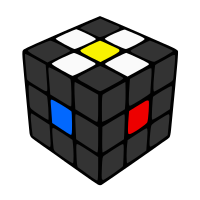
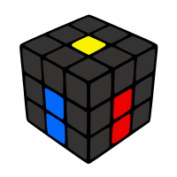
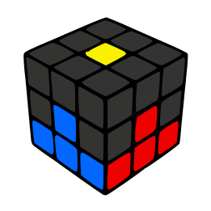
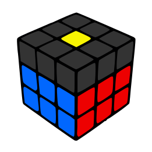
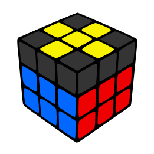
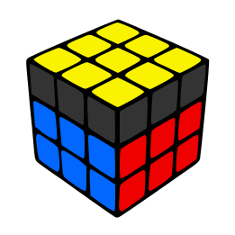
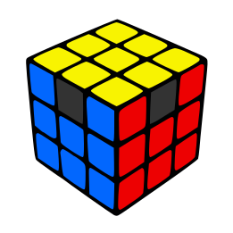
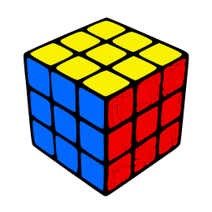

| R - right / direita horário. | R' - right / direita anti-horário. | R2 - right / direita duplo. |
| L - left / esquerda horário. | L' - left / esquerda anti-horário. | L2 - left / esquerda duplo. | U - up / topo horário. | D - down / base horário. | F - front / face horário. |
| B - back / atrás horário. |
Antes de começarmos, tenha seu cubo em mãos e embaralhe o mesmo aleatoriamente
No primeiro passo vamos posicionar os 4 meios brancos ao redor do centro amarelo.
Agora é só descer os meios brancos que preparamos ao redor do centro amarelo para a base do cubo, ao redor do centro branco, prestando muita atenção para colocar os meios correspondentes com cada centro.
No terceiro passo vamos finalizar toda a camada branca, colocando os 4 cantos brancos na base do cubo ao redor da cruz branca.
No quarto passo nós iremos colocar os meios na segunda camada do cubo, com isso já teremos as duas primeiras camadas prontas.
No quinto passo iremos fazer uma cruz no lado amarelo utilizando apenas 1 fórmula de 6 movimentos.
Neste passo nós vamos orientar todo o lado amarelo do cubo, restando apenas a permutação das laterias. estamos quase lá!
Agora, nós iremos finalizar todas os cantos da última camada utilizando apenas 1 fórmula. Estamos a um passo de finalizar!
Chegamos ao último passo! Só nos resta permutar os meios da última camada utilizando 1 fórmula com apenas 2 variações.
